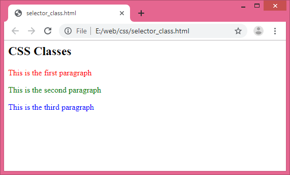
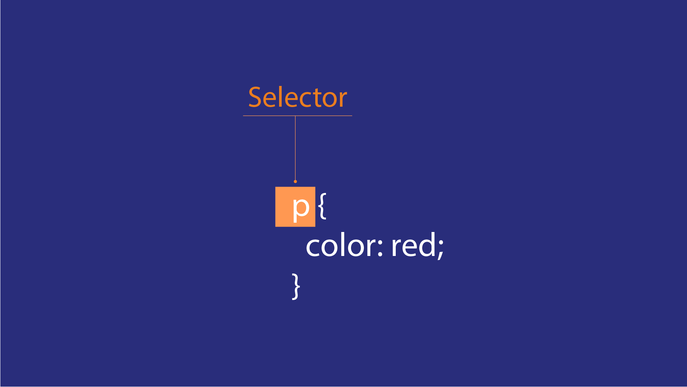
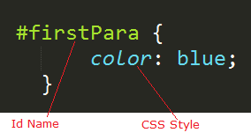
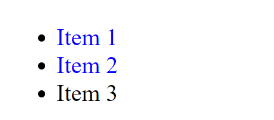
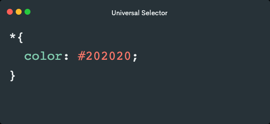
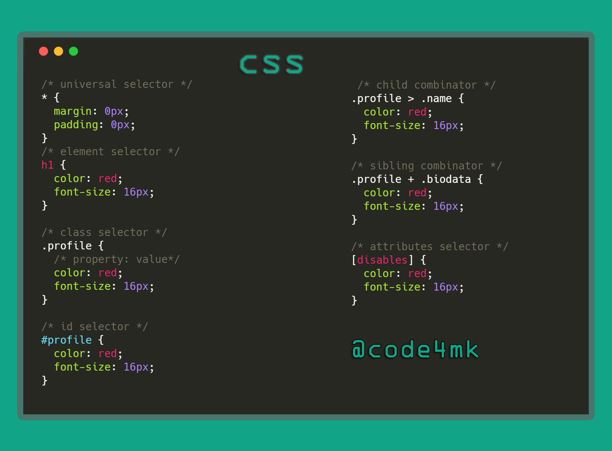

Introdução:
Em um mundo onde a estética e a acessibilidade da web são fundamentais, os seletores HTML e CSS emergem como heróis, capacitando os desenvolvedores a dar vida às suas criações. Vamos embarcar em uma jornada através do vasto universo dos seletores, onde cada escolha de estilo molda a experiência online de milhões.

Cenário:
Imagine uma página web comum, repleta de elementos diversos, desde títulos e parágrafos até listas e imagens. Cada um desses elementos tem sua própria identidade, seu próprio papel na narrativa visual da página.
Capítulo 1: Os Seletores Simples - Moldando o Básico
Nossa jornada começa com os seletores mais simples, como o seletor de tipo de elemento. Ao usar p como seletor, por exemplo, podemos aplicar estilos a todos os parágrafos da página. Imagine como cada parágrafo ganha uma nova vida com cores, tamanhos e fontes específicas, transformando o texto em uma jornada visualmente envolvente.
Capítulo 2: Mais Profundidade - Classes e IDs
À medida que avançamos, encontramos os seletores de classe e ID, permitindo-nos identificar elementos específicos em meio à multidão. Com a classe "destaque", por exemplo, um simples parágrafo pode se elevar acima dos outros, com cores vibrantes e fontes ousadas, capturando instantaneamente a atenção do leitor.
Capítulo 3: Relações e Contexto - Seletor de Descendência
Agora, mergulhamos mais fundo na estrutura da página, explorando os relacionamentos entre elementos com o seletor de descendência. Com ele, podemos estilizar listas de forma única, dando a cada item um papel distinto na história que contamos. Cada item pode receber sua própria paleta de cores ou uma fonte personalizada, adicionando camadas de significado à narrativa visual.
Capítulo 4: Domínio Total - Seletor Universal e Seletor de Atributo
À medida que nossa jornada se aproxima do clímax, encontramos os seletores universais e de atributos, concedendo-nos controle absoluto sobre todos os elementos. Com esses poderes, podemos transformar toda a página com um único golpe, alterando radicalmente a aparência e o tom para refletir a mensagem que desejamos transmitir.
Conclusão:
Assim, nossa jornada chega ao fim, mas o poder dos seletores HTML e CSS continua a moldar o mundo online. Cada escolha de estilo, cada seleção cuidadosa, influencia a forma como milhões experimentam a web, criando conexões profundas e impactantes em um vasto oceano digital.
